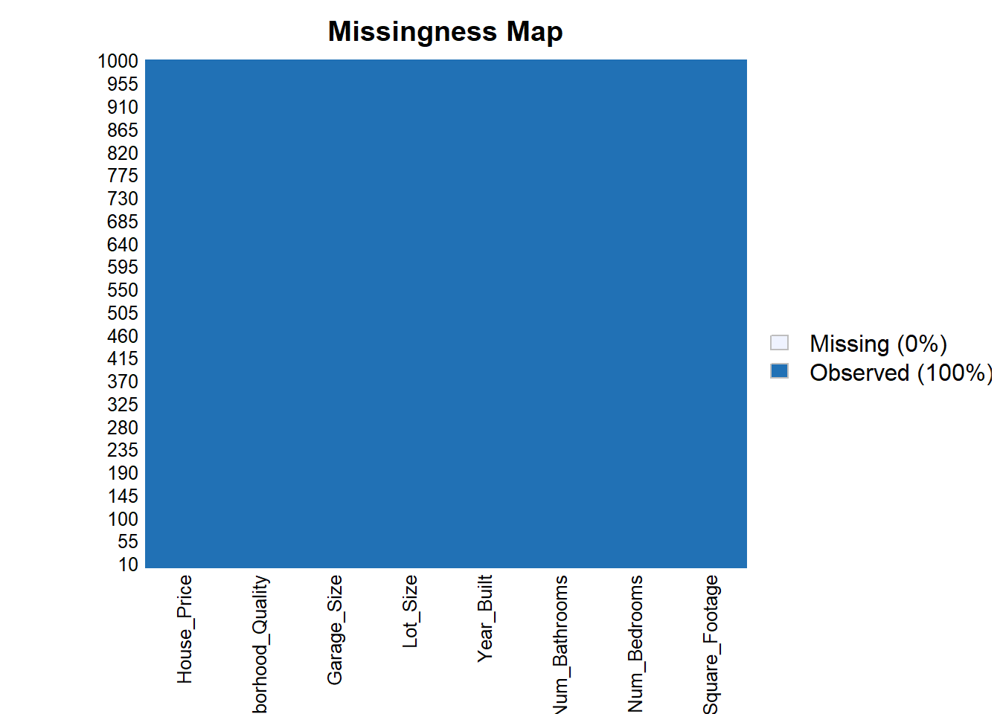

2 Extracción, transformación y carga de datos (ETL)
Antes de realizar cualquier análisis exploratorio o estadístico, es necesario garantizar que los datos con los que se trabajará sean confiables, estén completos y en un formato adecuado para su manipulación.
Este proceso, conocido como ETL (Extracción, Transformación y Carga), constituye la base de todo análisis de datos. Si esta etapa se realiza de forma deficiente, cualquier resultado o interpretación posterior, por más sofisticado que resulte siendo, quedará comprometido. De esta manera, se realizará la carga del conjunto de datos house_price_regression_dataset.csv, la identificación de valores faltantes y duplicados y, como último paso, la verificación de que cada variable se mueva dentro de rangos plausibles antes de iniciar el análisis exploratorio que se desarrollará más adelante.
2.1 Instalación de librerías
En primer lugar, se cargan las librerías necesarias para el desarrollo de este trabajo: tidyverse para la manipulación y visualización de datos mediante una sintaxis basada en el operador pipe (%>%); Amelia, utilizada para la detección visual de datos faltantes a través de la función missmap(); moments, que permite calcular medidas de forma de la distribución como la asimetría y la curtosis; patchwork, empleada para combinar múltiples gráficos de ggplot2 en una sola figura; GGally, que amplía las capacidades de visualización de ggplot2 con funciones como ggpairs() y ggcorr() para el análisis de relaciones entre variables; Hmisc, utilizada específicamente para calcular, en un solo paso, la matriz de correlación junto con la matriz de p-valores correspondiente a cada pareja de variables predictoras mediante la función rcorr(); y kableExtra, que permite dar un formato más vistoso (rayado, bordes, resaltado) a las tablas generadas con knitr::kable().
2.2 Carga del conjunto de datos house_price_regression_dataset
Se procede a cargar el conjunto de datos, correspondiente a información de viviendas residenciales individuales, con variables estructurales (superficie, habitaciones, baños, garaje), temporales (año de construcción), de entorno (calidad del vecindario) y el precio de venta observado.
2.3 Visualización del conjunto de datos y su estructura
El dataset contiene 1.000 observaciones, un número conveniente para inspeccionar.
Para no perder la buena práctica de verificar que la carga se haya hecho correctamente y tener una primera aproximación o avistamiento a las variables disponibles, se mostrarán las primeras 10 filas; asimismo, para determinar qué operaciones y transformaciones son válidas, se revisará la estructura interna de los datos (tipo de dato asignado a cada variable).
head(data, n = 10) %>%
kableExtra::kbl() %>%
kableExtra::kable_styling(bootstrap_options = c("striped", "hover", "condensed", "bordered"),
full_width = FALSE) %>%
kableExtra::scroll_box(width = "100%")| Square_Footage | Num_Bedrooms | Num_Bathrooms | Year_Built | Lot_Size | Garage_Size | Neighborhood_Quality | House_Price |
|---|---|---|---|---|---|---|---|
| 1360 | 2 | 1 | 1981 | 0.5996366 | 0 | 5 | 262382.9 |
| 4272 | 3 | 3 | 2016 | 4.7530138 | 1 | 6 | 985260.9 |
| 3592 | 1 | 2 | 2016 | 3.6348227 | 0 | 9 | 777977.4 |
| 966 | 1 | 2 | 1977 | 2.7306669 | 1 | 8 | 229698.9 |
| 4926 | 2 | 1 | 1993 | 4.6990726 | 0 | 8 | 1041740.9 |
| 3944 | 5 | 3 | 1990 | 2.4759300 | 2 | 8 | 879797.0 |
| 3671 | 1 | 2 | 2012 | 4.9119601 | 0 | 1 | 814427.9 |
| 3419 | 1 | 1 | 1972 | 2.8052814 | 1 | 1 | 703413.1 |
| 630 | 3 | 3 | 1997 | 1.0142860 | 1 | 8 | 173875.0 |
| 2185 | 4 | 2 | 1981 | 3.9416044 | 2 | 5 | 504176.5 |
2.4 Identificación de valores faltantes (NA)
Uno de los pasos más importantes de esta etapa es identificar la presencia de valores faltantes. En este contexto, ignorar los datos faltantes podría sesgar las estadísticas descriptivas y los análisis posteriores, especialmente si la ausencia de datos no ocurre de forma aleatoria (por ejemplo, si ciertas viviendas reportan sistemáticamente menos información sobre alguna característica). Así, se cuantifica primero el número de valores faltantes por columna:
data %>%
summarise(across(everything(), ~sum(is.na(.)), .names = "NA_{.col}")) %>%
kableExtra::kbl() %>%
kableExtra::kable_styling(bootstrap_options = c("striped", "hover", "condensed", "bordered"),
full_width = FALSE) %>%
kableExtra::scroll_box(width = "100%")| NA_Square_Footage | NA_Num_Bedrooms | NA_Num_Bathrooms | NA_Year_Built | NA_Lot_Size | NA_Garage_Size | NA_Neighborhood_Quality | NA_House_Price |
|---|---|---|---|---|---|---|---|
| 0 | 0 | 0 | 0 | 0 | 0 | 0 | 0 |

El conteo de NA arrojo cero en todas las columnas, y el mapa de Amelia confirma una matriz de datos completa (100% observado).
2.5 Identificación de valores duplicados
## [1] 0El conjunto de datos tampoco contiene filas duplicadas, por lo que se conservan las 1.000 observaciones originales.
2.6 Verificación de rangos
Antes de avanzar al análisis exploratorio, se revisa que cada variable se mueva dentro de un rango razonable para un conjunto de viviendas residenciales, lo que permite descartar errores de digitación o valores negativos imposibles (como una superficie o un precio menor a cero).
rangos <- data.frame(
Variable = c("Neighborhood_Quality", "Year_Built", "House_Price", "Lot_Size", "Square_Footage"),
Minimo = c(min(data$Neighborhood_Quality), min(data$Year_Built), min(data$House_Price),
min(data$Lot_Size), min(data$Square_Footage)),
Maximo = c(max(data$Neighborhood_Quality), max(data$Year_Built), max(data$House_Price),
max(data$Lot_Size), max(data$Square_Footage))
) %>%
mutate(
Minimo = format(round(Minimo, 2), big.mark = ",", scientific = FALSE, trim = TRUE),
Maximo = format(round(Maximo, 2), big.mark = ",", scientific = FALSE, trim = TRUE)
)
kableExtra::kbl(rangos, align = "lrr") %>%
kableExtra::kable_styling(bootstrap_options = c("striped", "hover", "condensed", "bordered"),
full_width = FALSE) %>%
kableExtra::scroll_box(width = "100%")| Variable | Minimo | Maximo |
|---|---|---|
| Neighborhood_Quality | 1.00 | 10.00 |
| Year_Built | 1,950.00 | 2,022.00 |
| House_Price | 111,626.85 | 1,108,236.84 |
| Lot_Size | 0.51 | 4.99 |
| Square_Footage | 503.00 | 4,999.00 |
Los rangos son razonables para un conjunto de viviendas residenciales, sin valores negativos ni atípicos evidentes por error de digitación. Neighborhood_Quality cubre la escala completa del 1 al 10; Year_Built va desde 1950 a 2022; Lot_Size entre 0.5 y 5 acres, y Square_Footage entre 503 y 4.999 pies cuadrados.